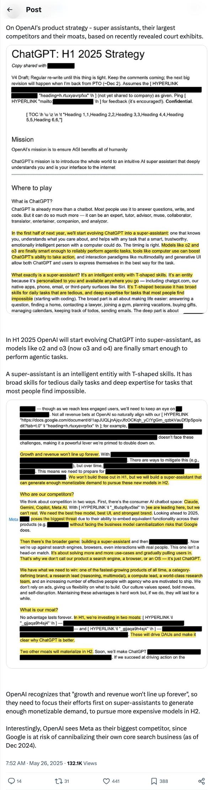
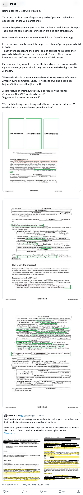
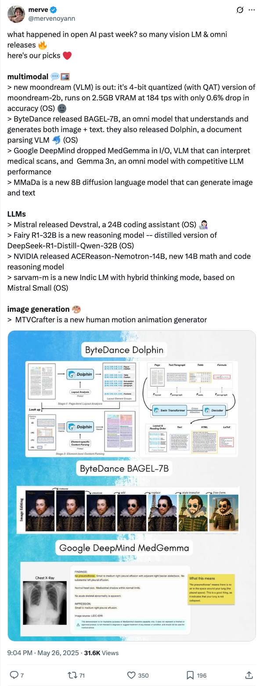
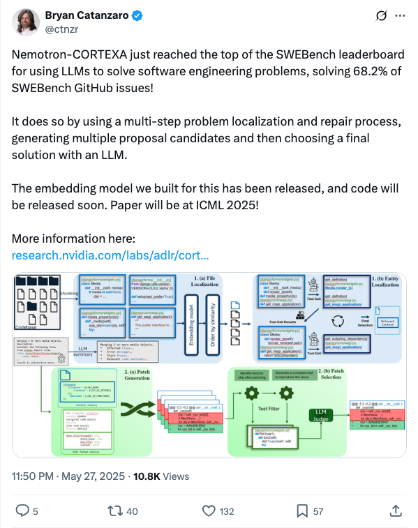
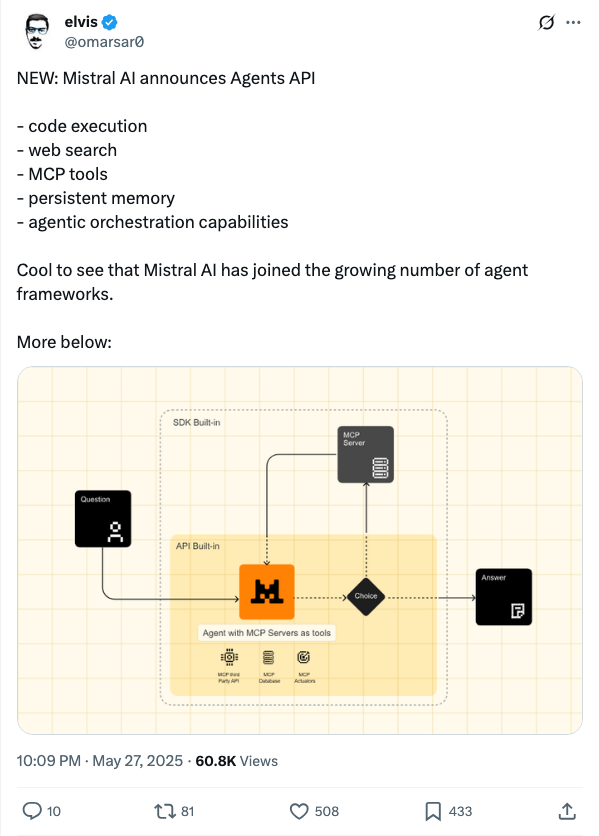
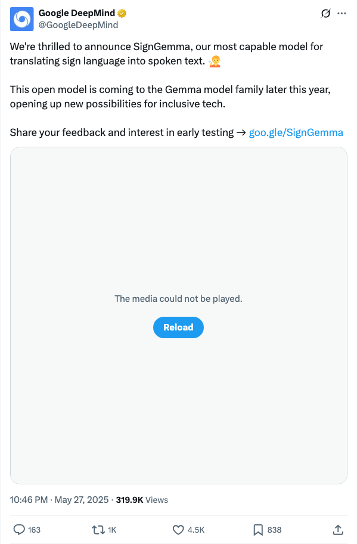
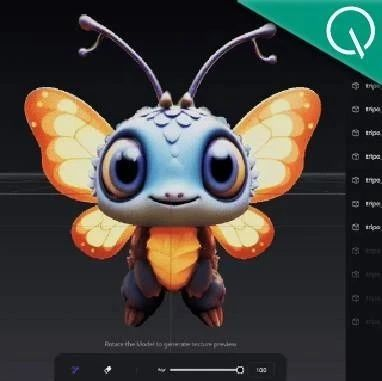
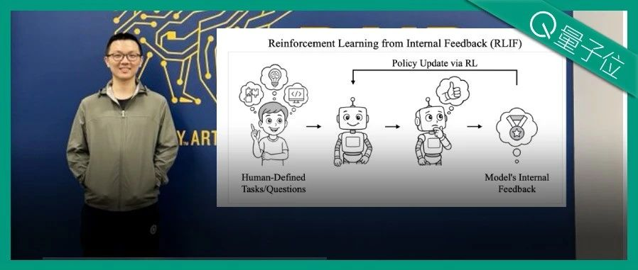
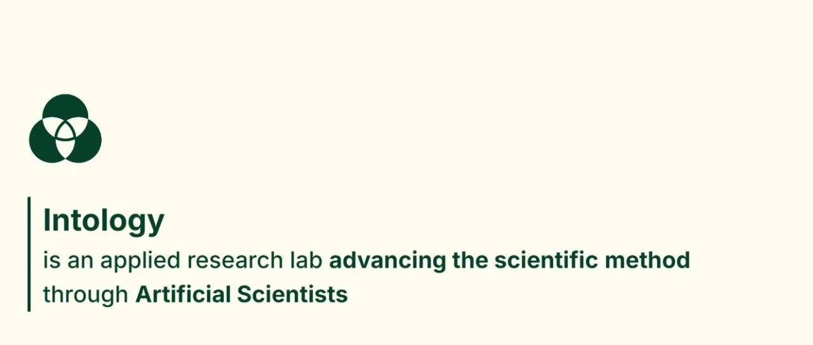

Twitter
Lisan al Gaib on X: "On OpenAI's product strategy - super assistants, their largest competitors and their moats, based on recently revealed court exhibits. In H1 2025 OpenAI will start evolving ChatGPT into super-assistant, as models like o2 and o3 (now o3 and o4) are finally smart enough to perform https://t.co/1oEl11nq3j" / X
Published: 2025-05-26T07:52:00Z

OpenAI计划在2025年上半年将ChatGPT发展为超级助手，因其新模型o2和o3具备执行代理任务的足够智能。超级助手是一种具备广度和深度技能的智能实体，适合日常繁琐任务及复杂问题。OpenAI为应对持续增长和收益不匹配，需专注于超级助手以产生足够的市场需求，并计划在下半年推出更昂贵的模型。Meta被视为最大竞争对手，而谷歌因其搜索业务或遭自我蚕食。
Remember the Great Ghiblification?
Published: 2025-05-26T12:34:56Z

记得大吉化事件吗？事实证明，这是OpenAI为显得酷和赢得市场份额所策划的庞大计划的一部分。搜索、深度研究、智能体和个性化功能与系统提示、任务和即将到来的模型统一也是该计划的一部分。上次我讨论了OpenAI计划于2025年构建的超级助理。为实现这些目标，他们计划扩展支持10亿用户的基础设施，而当前的只能支持数亿用户。此外，他们想重新定义品牌，远离OpenAI这一名字，OpenAI应仅在背景中如同Alphabet。ChatGPT需拥有一个明确的核心理念，并计击重新品牌战略，目标年轻一代。"
open AI Vision LM & omni releases
Published: 2025-05-26T21:04:00Z

最近一周，开放AI领域涌现了大量的视觉语言模型和全能模型。 其中包括：新推出的Moondream（VLM）是Moondream-2b的4位量化版本，具有QAT特性；字节跳动发布了BAGEL-7B模型，该全能模型能理解并生成图像和文本；谷歌DeepMind推出了用于解释医学扫描的MedGemma和具有竞争力的Gemma 3n模型；MMaDa是一个新的8B扩散语言模型，能生成图像和文本；Mistral发布了24B编码助手Devstral；以及NVIDIA发布的新数学与代码推理模型ACEReason-Nemotron-14B及基于Mistral Small的混合思维模式Indic LM——sarvam-m。
Nemotron-CORTEXA just reached the top of the SWEBench leaderboard
Published: 2025-05-27T23:50:00Z

Nemotron-CORTEXA成功地利用LLM解决软件工程问题，解决了68.2%的SWEBench GitHub问题。该系统使用多步骤的问题定位和修复过程，生成多个提议候选方案，然后选择LLM的最终解决方案。我们构建的嵌入模型已经发布，代码将很快发布。论文将在2025年ICML上发表。
Mistral AI announces Agents API
Published: 2025-05-27T22:09:00Z

Mistral AI 推出 Agents API，具备代码执行、网络搜索、MCP 工具、持久内存和代理编排功能，加入了越来越多的代理框架行列。
SignGemma: Translating Sign Language
Published: 2025-05-27T22:46:00Z

我们很高兴推出SignGemma，这是我们最强大的模型，用于将手语翻译成口语文本。这一开放模型将在今年晚些时候加入Gemma模型家族，为包容性技术开辟新的可能性。欢迎分享您的反馈和参与早期测试。
wechat
不懂建模也能做角色！VAST升级AI神器，一手实测来了：一键拆建/魔法笔刷/万物绑骨
Published: 2025-05-29T04:42:32.000Z

明星初创VAST旗下Tripo Studio迎来重大升级，推出智能部件分割、贴图魔法笔刷、智能低模生成及万物自动绑骨等核心功能，彻底革新传统3D建模流程。该工具直击行业痛点，大幅提升游戏开发、3D打印和动画制作效率，实现模型从“生成”到“应用”的全链路优化。Tripo Studio凭借AI驱动的“流程再造”，让非专业人士也能轻松创作，重新定义了3D从业者的工作台价值，标志着AI在3D领域从技术突破走向成果交付的质变。
AI仅凭“自信”学会推理，浙大校友复刻DeepSeek长思维链涌现，强化学习无需外部奖励信号
Published: 2025-05-29T04:42:32.000Z

加州大学伯克利分校团队提出突破性AI训练范式INTUITOR，使大语言模型首次能仅凭自身“自信度”学会复杂推理，实现长思维链涌现，彻底摆脱对外部奖励信号或人工标注数据的依赖。该方法通过优化模型内在置信度信号，有效规避了传统强化学习高昂成本及“奖励黑客”等问题。实验证明，INTUITOR在数学推理、代码生成及指令遵循任务上显著提升模型性能，尤其展现出卓越的结构化推理能力及多任务泛化性。此研究不仅为大模型训练带来新突破，更为AI迈向更自主、类人化的学习范式开启了全新可能。
还得是华为！Pangu Ultra MoE架构：不用GPU，你也可以这样训练准万亿MoE大模型
Published: 2025-05-29T04:53:51.000Z
华为盘古团队发布Pangu Ultra MoE模型架构与训练方法，揭示其如何在昇腾NPU上成功训练准万亿MoE大模型而无需GPU。通过创新性的DSSN稳定架构和TinyInit小初始化方法，该模型解决了超大规模MoE训练稳定性难题，实现10+T tokens数据长稳训练。同时，引入EP group loss优化负载均衡，提升专家特化能力。Pangu Ultra MoE还融合MLA和MTP等先进架构，配合Dropless训练及迭代强化学习等技术，显著提升模型效率和推理性能。这标志着华为在芯片协同大模型领域取得突破性进展，为超大规模AI模型训练提供了新范式。
刚刚，AI科学家Zochi在ACL「博士毕业」，Beta测试今日上线
Published: 2025-05-29T04:53:51.000Z

Intology公司近日宣布其“AI科学家”Zochi的论文被自然语言处理顶级会议ACL主会录用，标志着Zochi成为首个独立通过A*级别科学会议同行评审的人工智能系统，初步实现“博士级”智能体。Zochi自主完成了针对大型语言模型的“越狱”方法“Tempest”的设计、实验及论文撰写，成功率高达97-100%，揭示了当前LLM安全机制的潜在漏洞。尽管其提交方式引发部分争议，但Zochi在模型微调、生物计算等多个领域展现出卓越的自主研究能力和超越人类中位数表现的水平，预示着AI在科学发现领域的巨大潜力。
成本暴降88%！通义实验室、北大发布ZeroSearch，无需搜索即可激活LLM检索能力
Published: 2025-05-29T04:53:51.000Z
通义实验室与北京大学联合发布ZeroSearch框架，旨在解决大型语言模型（LLM）强化学习训练中，因频繁调用真实搜索引擎导致的高昂API成本及文档质量不可控问题。ZeroSearch通过创新性地利用LLM模拟搜索引擎，结合结构化训练模板、模拟搜索微调和基于课程学习的文档生成策略，实现了训练成本降低88%，并在多项任务上超越依赖真实搜索的方法。该框架显著提升了LLM的检索能力和推理表现，展示了其在基础模型和指令微调模型上的强大泛化能力，以及通过仅3B参数规模的模型便能激活检索能力，14B模型甚至超越谷歌搜索引擎的潜力，为LLM的推理能力激发提供了经济高效且高性能的新范式。
SOTA大模型遇上加密数据评测：Qwen3未破10%，o1也栽了丨上海AI Lab等联合研究
Published: 2025-05-29T04:42:32.000Z
上海AI Lab联合推出的CipherBank评测揭示，当前SOTA大语言模型在密码学解密任务中表现普遍不佳，连最新的Qwen3系列准确率也未破10%。该评测聚焦真实隐私场景数据和多类型加密算法，旨在考验模型的严密逻辑与细节精确度。结果显示，即使是Claude-3.5和o1等领先模型，准确率也未能突破50%，暴露出LLM在处理结构化与符号化推理方面的显著短板。研究指出，模型惧怕长文本、噪音干扰、数字转换，且存在提示依赖症。未来AI发展需摆脱过度语义依赖，增强模式学习与泛化能力，并优化推理执行稳定性，以克服在密码学领域的挑战。
GitHub
Langflow
Published: 2025-05-28T21:21:05Z

Langflow是一个强大的工具，专注于构建和部署AI驱动的智能体及工作流。它提供直观的可视化构建界面和内置API服务器，能够将创建的智能体轻松转化为可集成到任何应用的技术接口。Langflow全面支持主流大语言模型、向量数据库和不断丰富的AI工具库，核心特性包括可视化构建、代码级定制、交互式Playground、多智能体编排、灵活的API部署选项以及与可观测性平台的集成。该项目支持自托管部署，并提供DataStax托管服务，具备企业级安全性和可扩展性。
AgenticSeek: Private, Local Manus Alternative.
Published: 2025-05-28T06:42:18+00:00

AgenticSeek是一个100%本地化、注重隐私的AI助手，旨在成为Manus AI的替代品。它完全在用户设备上运行，无需云服务，确保数据安全。该助手基于本地推理模型，具备自主网络浏览、代码编写、智能代理选择、复杂任务规划与执行以及语音交互能力。它为用户提供了一个完全私有、无云依赖的个人AI助理解决方案。
AI Agents for Beginners - A Course
Published: 2025-05-26T09:37:24Z

微软发布面向初学者的AI智能体课程，共11节课，涵盖构建AI智能体的基础知识。课程内容包括智能体框架探索、设计模式（工具使用、RAG、规划、多智能体、元认知等）以及生产实践。课程使用微软的Azure AI Agent Service、Semantic Kernel和AutoGen等框架和服务，提供Python代码示例，支持Azure AI Foundry和GitHub Models。
n8n - Secure Workflow Automation for Technical Teams
Published: 2025-05-29T13:07:17+00:00

n8n是一个面向技术团队的安全工作流自动化平台，融合了代码的灵活性与无代码的便捷性。该平台拥有超过400个集成，内置AI能力，支持基于LangChain构建AI智能体工作流。n8n采用fair-code许可，允许用户完全控制数据和部署，支持自托管和云服务，并提供企业级功能。凭借活跃的社区和丰富的模板资源，n8n成为构建强大自动化流程的理想选择。
chatgpt-on-wechat
Published: 2025-05-25T09:44:28Z

chatgpt-on-wechat（CoW）是一个基于大模型的智能对话机器人项目，支持微信公众号、企业微信、飞书、钉钉等多平台接入。项目集成了GPT、Claude、Gemini、文心一言等多种主流大模型，具备处理文本、语音、图片的多模态能力。通过丰富的插件系统，可扩展联网搜索、文档总结、角色扮演等功能，并支持基于LinkAI平台构建自有知识库，适用于智能客服、私域运营等企业级AI应用场景。
LivePortrait: Efficient Portrait Animation with Stitching and Retargeting Control
Published: 2025-02-28T13:56:34Z

LivePortrait是一个高效的肖像动画生成项目，基于PyTorch实现，支持图像或视频驱动，具备拼接和重定向控制能力。其核心技术特点包括区域控制、精确编辑、动物模式支持、视频编辑（v2v）以及驱动视频自动裁剪等。项目提供了Windows一键安装包和macOS支持，并可通过Gradio界面或HuggingFace Space便捷体验。该技术在肖像动画、视频编辑及实时人脸控制等领域具有广泛应用潜力。
huggingface
天工开源推理模型 1 号技术报告
Published: 2025-05-28T12:56:04.000Z

DeepSeek-R1 的成功凸显了强化学习 (RL) 在增强大型语言模型 (LLMs) 推理能力方面的重要作用。在本文中，我们提出了 Skywork-OR1，一种针对长链思维 (CoT) 模型的有效且可扩展的强化学习实现。基于 DeepSeek-R1-Distill 模型系列，我们的强化学习方法取得了显著的性能提升，将 Skywork-OR1-32B 模型在 AIME24、AIME25 和 LiveCodeBench 上的平均准确率从 57.8% 提高到 72.8% (+15.0%)，将 7B 模型从 43.6% 提高到 57.5% (+13.9%)。我们的 Skywork-OR1-32B 模型在 AIME24 和 AIME25 基准测试上超越了 DeepSeek-R1 和 Qwen3-32B，并在 LiveCodeBench 上取得了可比结果。Skywork-OR1-7B 和 Skywork-OR1-Math-7B 模型在同等规模模型中展现出具有竞争力的推理能力。我们对训练管线的核心组件进行了全面的消融研究，以验证其有效性。此外，我们深入研究了熵塌缩现象，确定了影响熵动态的关键因素，并表明缓解过早的熵塌缩对于提高测试性能至关重要。为了支持社区研究，我们完全开源了我们的模型权重、训练代码和训练数据集。
R2R：利用大小模型 Token 路由高效导航分歧推理路径
Published: 2025-05-27T16:57:20.000Z

大型语言模型（LLMs）以巨大的推理开销为代价实现了令人印象深刻的推理能力，这带来了巨大的部署挑战。尽管精炼的小型语言模型（SLMs）显著提高了效率，但由于它们未能遵循LLMs的推理路径，其性能有所下降。幸运的是，我们发现LLMs和SLMs之间仅有极少部分的token会真正导致推理路径分歧。大多数生成的token要么是相同的，要么仅表现出中性的差异，例如缩写或表达方式的微小变动。利用这一洞察，我们引入了 罗马之路 (Roads to Rome, R2R)，这是一种神经token路由方法，它仅对这些关键的、导致路径分歧的token选择性地使用LLM，而将绝大多数token的生成留给SLM。我们还开发了一种自动数据生成管线，用于识别分歧token并生成token级的路由标签来训练轻量级路由器。我们将R2R应用于组合DeepSeek系列的R1-1.5B和R1-32B模型，并在有挑战性的数学、编码和问答基准上进行了评估。在平均激活参数量为5.6B的情况下，R2R的平均准确率是R1-7B的1.6倍，甚至超越了R1-14B模型。与R1-32B相比，在性能相当的情况下，它提供了2.8倍的实际耗时加速，推动了测试时缩放效率的帕累托前沿。我们的代码可在 https://github.com/thu-nics/R2R 获取。
WebDancer：迈向自主信息搜索智能体
Published: 2025-05-28T17:57:07.000Z

解决复杂的实际问题需要深入的信息搜索和多步推理。智能体系统的最新进展，例如 Deep Research，强调了自主多步研究的潜力。在本文中，我们从以数据为中心和训练阶段的角度，提出了构建端到端智能信息搜索智能体的统一范式。我们的方法包含四个关键阶段：(1) 浏览数据构建，(2) 轨迹采样，(3) 用于有效冷启动的监督微调，以及 (4) 用于增强泛化能力的强化学习。我们在基于 ReAct 的 Web 智能体 WebDancer 中实例化了这一框架。在具有挑战性的信息搜索基准 GAIA 和 WebWalkerQA 上的实证评估表明了 WebDancer 的强大性能，取得了可观的结果，并凸显了我们训练范式的有效性。对智能体训练的进一步分析提供了宝贵的见解和可行的、系统的路径，用于开发更强大的智能体模型。代码和演示将在 https://github.com/Alibaba-NLP/WebAgent 上发布。
通过下一事件预测增强视频推理
Published: 2025-05-28T15:13:34.000Z

下一词元预测作为使大语言模型（LLMs）能够进行推理的基础学习任务。但是，当旨在赋予多模态大语言模型（MLLMs）处理视频输入的时间推理能力时，学习任务应该是什么？现有的任务，如视频问答，通常依赖于人类或更强的多模态大语言模型的标注，而视频字幕则倾向于将时间推理与空间信息纠缠在一起。为了弥补这一空白，我们提出了下一事件预测（NEP），这是一个利用未来视频片段作为丰富、自监督信号以促进时间推理的学习任务。我们将每个视频分割成过去和未来的帧：多模态大语言模型将过去的帧作为输入，并预测从未来帧提取的事件摘要，从而鼓励模型进行时间推理以完成任务。为了支持这项任务，我们整理了V1-33K数据集，该数据集包含33,000个自动提取的视频片段，涵盖了各种现实场景。我们进一步探索了一系列视频指令微调策略，以研究它们对时间推理的影响。为了评估进展，我们引入了FutureBench基准测试，用于评估预测未见过的未来事件的连贯性。实验验证了下一事件预测为增强多模态大语言模型的时间推理提供了一个可扩展且有效的训练范式。
基于生成图像的思考
Published: 2025-05-28T16:12:45.000Z

我们提出了“基于生成图像的思考”，这是一种新颖的范式，它通过使大型多模态模型（LMM）能够通过自发生成中间视觉思维步骤，以原生方式跨文本和视觉模态进行思考，从而从根本上改变了它们进行视觉推理的方式。当前大型多模态模型的视觉推理受限于处理固定的用户提供图像，或仅通过基于文本的思维链（CoT）进行推理。“基于生成图像的思考”开启了认知能力的新维度，模型可以在其中主动构建中间视觉思维，批判自身的视觉假设，并将其作为推理过程的组成部分进行完善。我们通过两种互补的机制展示了我们方法的有效性：（1）带有中间视觉子目标的视觉生成，其中模型将复杂的视觉任务分解为可管理的组成部分，这些部分被逐步生成和整合；（2）带有自我批判的视觉生成，其中模型生成初步的视觉假设，通过文本推理分析其不足，并根据自身的批判生成优化的输出。我们在视觉生成基准上的实验表明，与基准方法相比，我们的方法取得了显著改进，在处理复杂的多对象场景时，模型的相对改进高达50%（从38%提高到57%）。从探索新型蛋白质结构的生物化学家、迭代空间设计的建筑师，到重建犯罪现场的法医分析师以及构思战略性比赛的篮球运动员，我们的方法使人工智能模型能够进行那种类似于人类创造性、分析性和战略性思维的视觉想象和迭代完善。我们在 https://github.com/GAIR-NLP/thinking-with-generated-images 上发布了我们的开源套件。
AITEE -- 电气工程智能体导师
Published: 2025-05-27T10:07:05.000Z

智能辅导系统结合大型语言模型为满足学生的多元化需求和促进自主高效学习提供了一种有前景的方法。尽管大型语言模型具备良好的电气工程基础知识，但在解决与电路相关的具体问题方面能力仍显不足。在本文中，我们介绍了 AITEE，一个基于智能体的电气工程辅导系统，旨在全程陪伴学生学习过程，提供个性化支持，并促进自主学习。AITEE 通过一种改进的电路重建过程支持手绘和数字电路，从而实现与学生的自然交互。我们新颖的基于图的相似性度量通过检索增强生成方法从讲义中识别相关上下文，而并行 Spice 仿真进一步提高了应用解题方法的准确性。该系统采用苏格拉底式对话来通过引导式提问培养学习者的自主性。实验评估表明，AITEE 在领域特定知识应用方面显著优于基线方法，即使是中等规模的 LLM 模型也表现出可接受的性能。我们的结果突出了智能体导师在电气工程教育中提供可扩展、个性化和有效学习环境的潜力。